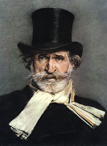
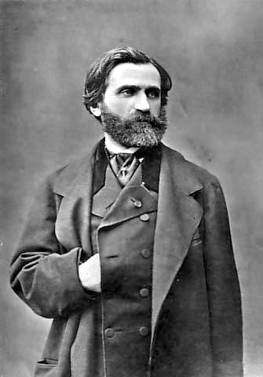

Giuseppe Fortunino Francesco Verdi
Giuseppe Fortunino Francesco Verdi (n. 10 octombrie 1813, Le Roncole — d. 27 ianuarie 1901, Milano) a fost un compozitor italian, vestit mai ales pentru creațiile sale în muzica de operă.
Giuseppe Verdi s-a născut la 10 octombrie 1813 în mica localitate Le Roncole, în apropierea Parmei, Italia. Părinții săi, Carlo Giuseppe Verdi și Luigia Uttini, dețineau acolo o mică fermă, Osteria Vecchia.
Încă de copil, Giuseppe ia lecții de muzică de la organistul din comună, făcând exerciții acasă la o spinetta dezacordată (un fel de clavecin). Continuă în felul acesta până când Antonio Barezzi, un comerciant din Busseto iubitor de muzică, prieten al familiei Verdi, îl ia la el în casă și-i plătește lecții de muzică la un nivel mai ridicat. În 1832 se prezintă la conservatorul din Milano, dar este respins pentru că depășise limita de vârstă pentru un student de conservator. Reîntors la Busseto primește postul de maestru de muzică al comunei și se căsătorește în 1836 cu fiica lui Barezzi, Margherita, de la care are doi copii, Virginia și Icilio. Între timp, Verdi începe să compună, orientat încă de acum în direcția muzicii de operă. În 1839 debutează la Teatro alla Scala din Milano cu opera Oberto, conte di San Bonifacio, obținând un oarecare succes, umbrit însă în 1840 de moartea Margheritei, apoi și a celor doi copii. Îndurerat de aceste pierderi, Verdi se reculege și își continuă activitatea componistică cu opera Un giorno di regno, care înregistrează însă un total fiasco. Descurajat, se gândea deja să abandoneze muzica, dar numai doi ani mai târziu, în 1842, obține la Scala un succes triumfal cu opera Nabucco, datorat în parte și interpretării magnifice a sopranei Giuseppina Strepponi, care avea să-l însoțească până către sfârșitul vieții.

